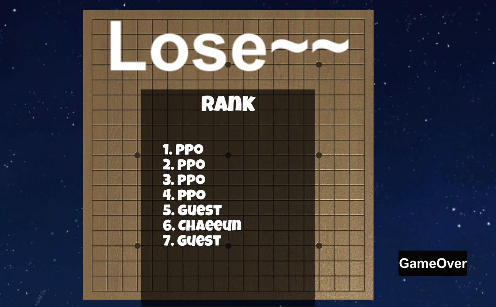
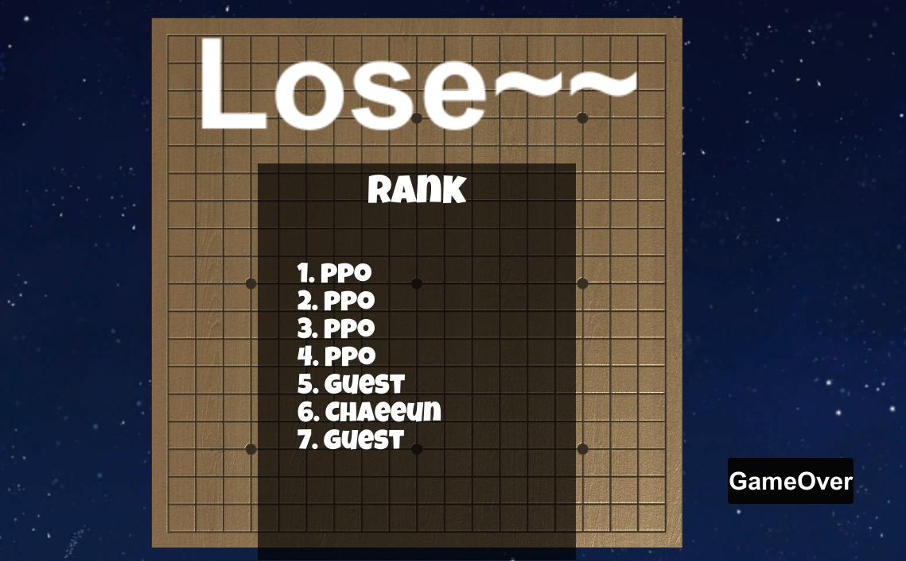

로고에 Omok 버튼을 누르고 들어오면 보이는 첫 화면이 사진1로써 이 게임에 대한 규칙을 간단하게 설명하고 있습니다. Start버튼을 누르면 사진2에 보이는 것처럼 컴퓨터와 1대1 대전을 할수도 다른사람과 대결을 할 수도 있게 만들었습니다.
사진3,4는 컴퓨터와 1대1 대전을 하는 모습으로 컴퓨터는 인공지능까지는 아니더라도 어느정도 내 돌과 근접하게 놓는 것으로 만들었습니다. 뒤이어 사진 5,6은 실행파일을 2개를 켜서 다른사람과 대결을 할 수 있는 구조로 unity에 있는 U-Net으로 network를 달아서 진행되게 하여 Host와 Client버튼을 누르면 게임이 시작됩니다.
게임이 끝나고 승패가 나오며 랭킹이 뜨게되는데 마찬가지로 로그인했던 NCMB로 데이터를 저장하고 불러와 랭킹이 뜨게 만들었습니다. 또한 기본적인 로직은 따로 라이브러리를 만들어 관리를 하고 있습니다.